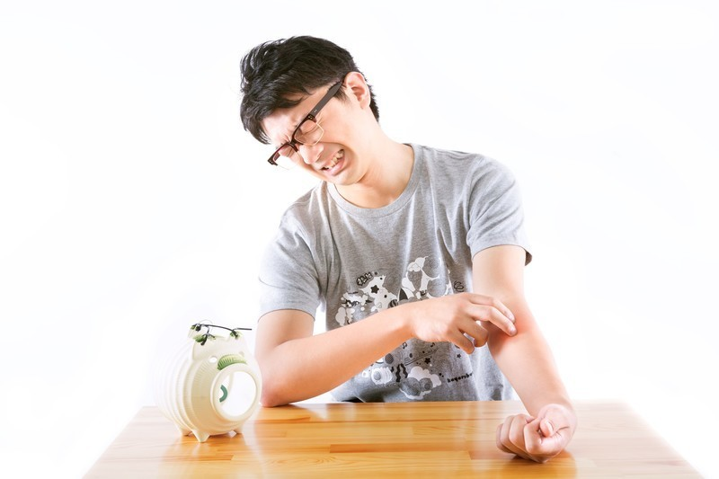

自家感作性皮膚炎の鍼灸
局所の湿疹やかぶれが悪化した後、全身に強いかゆみと小紅斑が広がる皮膚炎です。皮膚科治療と並行し、ツボ刺激と睡眠ケアで整えます。
まず知っておきたい要点と施術方針
自家感作性皮膚炎は、虫刺され、かぶれ（接触皮膚炎）、貨幣状湿疹、アトピー性皮膚炎など元の皮膚病変が急激に悪化した際、病変部で生じた変性自己タンパク質や細菌・毒素などに対して免疫が過剰に反応（感作）し、数週間で全身に強いかゆみを伴う小さな紅斑・丘疹・膿疱が広がる状態です。皮膚科で元の病変を含めてステロイド外用薬や抗ヒスタミン薬などで炎症を鎮めることが最優先であり、十分な保湿と良質な睡眠も回復に欠かせません。（公式解説）
このようなお悩みはありませんか？
- ✓虫刺されやかぶれ、貨幣状湿疹などが急に悪化した後に全身へ広がった
- ✓夜も眠れないほど強いかゆみがあり、小さな赤いブツブツが出ている
- ✓元の湿疹とは離れた腕や脚、体幹にも紅斑や丘疹・膿疱が現れた
- ✓かゆみによる睡眠不足やストレスでさらに肌が荒れている
当院の施術アプローチ
院長YouTube解説・関連動画
全身に強いかゆみのある小さな紅斑や丘疹、膿疱ができる

自家感作性皮膚炎の症状は、全身に強いかゆみのある小さな紅斑や丘疹、膿疱ができることです。
皮膚病変に発赤や腫れなどの炎症が起きてから2週間程度経った後に全身に強いかゆみのある小さな紅斑や丘疹、膿疱ができるのです。
小さな紅斑や丘疹、膿疱は、体幹や手足、顔などに左右対称に現れます。非常に強いかゆみがあるため、夜眠ることができなくなったり、無意識にかいて皮膚にダメージを与えたりすることもあります。
また、程度の重いアレルギー反応が全身で起きることによって、場合によっては発熱や倦怠感などの症状が現れることもあります。
自家感作性皮膚炎の症状は、初期の発疹から慢性的な湿疹まで幅広く、原因となる皮膚の病気の種類や位置、個々の免疫反応により大きく異なります。その症状について詳しく説明します。
発疹: 自家感作性皮膚炎の最も一般的な症状は、身体の一部または全体に広がる発疹です。この発疹は、元々の皮膚疾患とは異なる場所に現れる可能性があります。発疹は通常、小さな赤い斑点や膨らんだ斑点（パプル）、小さな水疱（ヴェジクル）など、様々な形状や大きさで現れます。
かゆみ: 発疹はしばしば強いかゆみを伴います。このかゆみは、肌の炎症により神経が刺激を受けるために起こります。さらに、かゆみを感じて皮膚を掻くと、皮膚がさらに刺激され、炎症が悪化するという悪循環に陥る可能性があります。
皮膚の赤みと腫れ: 発疹の周囲の皮膚は、炎症反応により赤く、腫れて見えることがあります。これは体が感染症や炎症に対抗するために血流を増やしているためです。
皮膚の乾燥とひび割れ: 自家感作性皮膚炎が長期化すると、皮膚は乾燥し、ひび割れる可能性があります。これは皮膚の保護機能が損なわれ、水分が蒸発しやすくなるためです。さらに、皮膚のひび割れは新たな感染の入り口となる可能性があります。
傷跡と色素沈着: 慢性的な自家感作性皮膚炎は、皮膚に傷跡を残すことがあります。これは皮膚の再生過程で組織が適切に回復しない結果として発生します。また、炎症反応により皮膚のメラニン色素が過剰に産生されると、色素沈着が起こることがあります。これは、皮膚が暗く見える斑点や部分的な色調変化を引き起こします。
感染の兆候：自家感作性皮膚炎は皮膚の防御機能を弱めるため、二次感染のリスクが高まります。皮膚が腫れ、暖かく感じる、激しい痛みを伴う、または膿が見える場合、これらは感染の兆候かもしれません。
以上のように、自家感作性皮膚炎の症状は多岐にわたります。その症状は、根本的な皮膚の状態、免疫応答、そして病気の進行度により大きく影響を受けます。身体のどこかに異常な皮膚の変化や不快感がある場合は、専門医に相談することが最善です。
自家感作性皮膚炎の改善方法は、もともと発症していた皮膚病変の改善を行うことです。そのため、もともと発症していた皮膚病変の改善を行いながら、自家感作性皮膚炎の症状を抑えることになります。
自家感作性皮膚炎の症状を抑えるためには、ステロイドを含んだ外用薬を使ったり、かゆみを抑えるための抗ヒスタミン薬や抗アレルギー薬を内服したりします。
強いかゆみによって日常生活に影響が出る場合は、ステロイドを内服することもあります。
自家感作性皮膚炎は、生活における身体的、精神的な苦痛を引き起こす可能性があります。しかし、理解と適切な改善を通じて、これらの影響を最小限に抑えることが可能です。以下に、自家感作性皮膚炎の一般的な改善方法について説明します。
トピカルクリーム: 自家感作性皮膚炎の主要な改善方法であり、ステロイドクリームや軟膏などが用いられます。これらの薬は皮膚の炎症を抑え、痒みを軽減します。非ステロイドのトピカル薬物（例えば、タクロリムス軟膏やピメクロリムスクリーム）も一部では有効であることが示されています。
抗ヒスタミン薬: 抗ヒスタミン薬は、痒みを抑制するためによく使用されます。これらは、ヒスタミンという物質が皮膚の痒みを引き起こすメカニズムをブロックすることで作用します。この薬は一日数回、口から服用します。
光照射: 光照射は、紫外線Bやプソラレンと紫外線Aを用いて皮膚に照射するものです。これは免疫反応を調整し、皮膚の炎症を減らす効果があります。ただし、適用できる人は限られており、改善の進行に伴い皮膚がんのリスクが高まることが知られています。
テロイド薬の全身投与や、免疫系を調節する薬物（免疫抑制薬）の使用: 重度の自家感作性皮膚炎または他の改善方法が効果がない場合に用いられます。ただし、これらの薬物は重篤な副作用を引き起こす可能性があるため、長期的な使用には注意が必要です。
生活習慣の改善：自家感作性皮膚炎の改善方法は薬だけに限定されません。日常生活の中で皮膚を健康に保つためのケアも重要です。具体的には、皮膚を乾燥させないために十分な保湿を行う、刺激物やアレルゲンを避ける、ストレス管理をするなどが含まれます。
セカンドオピニオン：一つの改善方法が効果を示さない場合、他の専門家の意見を求めることも有効です。新たな視点やアプローチが自分に合った治療法を見つける手助けとなることがあります。
プロバイオティクス：最近の研究では、腸内微生物のバランスが皮膚の状態に影響を与えることが指摘されています。プロバイオティクスを摂取することで皮膚の炎症を改善する可能性があります。
自家感作性皮膚炎の改善方法は、個々の症状、全体的な健康状態、生活習慣、そして皮膚炎の原因となる可能性がある要因によって異なります。改善の目的は、症状の管理、炎症の減少、そして皮膚の再発防止です。
最後に、自家感作性皮膚炎を発症した人が自分自身でできることとして、皮膚の保湿、アレルギー原因物質や刺激物質を避けること、そして皮膚の不快感や変化に対して敏感であることが挙げられます。
自家感作性皮膚炎では、非常に激しいかゆみが起こることが多いです。かいてしまうとさらに症状は悪くなってしまいます。
肌は寝ている間に、新陳代謝が高まり修復されるといわれています。そのためできるだけ早く寝るように心がけること、質のよい睡眠をとることを心がけることが大事です。
良い睡眠をきちんととることは、肌の回復力を高め、皮膚の改善につながるのでです。
皮膚のお悩みのツボ図解とセルフケア
実際の施術ではお一人おひとりの体質・症状に合わせて選穴しますが、皮膚症状（アトピー性皮膚炎・慢性蕁麻疹・掻痒感）の臨床でよく用いられる代表的なツボの目安です。

📌 代表的なツボの詳細一覧表を開く（6穴） ▼
| ツボ名 | 位置の目安 | 主な狙い | セルフケアの注意点 |
|---|---|---|---|
| 曲池（きょくち） | 肘を曲げた外側の横ジワ先端 | 皮膚の熱感・炎症・掻痒感の鎮静 | 肘に湿疹・びらん・掻き傷がある場合は直接触れない |
| 血海（けっかい） | 膝のお皿の内側上端から指3本分上 | 蕁麻疹・掻痒・末梢循環の調整 | 皮疹部の摩擦・温灸は痒みを増悪させるため回避 |
| 合谷（ごうこく） | 手の甲、親指と人差し指の骨が交わる手前 | 顔面〜上半身の皮膚トラブル・自律神経調整 | 妊娠中の強刺激は避ける。手荒れ・亀裂時は押圧しない |
| 三陰交（さんいんこう） | 内くるぶし頂点から指4本分上、すね骨の後ろ際 | 乾燥肌・夜間掻痒・体質バランス調整 | 妊娠中の強刺激は避ける。保湿後に清潔な手で優しく |
| 築賓（ちくひん） | 内くるぶしから指7本分上、ふくらはぎ内側 | 慢性蕁麻疹・アレルギー体質・皮膚炎症緩和 | 強く揉まず心地よい圧で数秒キープ |
| 百虫窩（ひゃくちゅうか） | 血海からさらに指1本分ほど上 | 強い痒み・蕁麻疹・湿疹の鎮痒サポート | 皮膚バリアを傷つけないよう必ず指の腹を使用 |
国際査読論文の科学的エビデンス
国際的な医学データベース（PubMed・Cochrane等）で報告されている皮膚症状（アトピー性皮膚炎・慢性蕁麻疹・掻痒感）領域の代表的な査読済み鍼灸研究をまとめています（標準治療との併用や研究上の限界を含めて正確に掲載）。
📚 査読論文データ・PubMed出典リンクを開く（4件） ▼
| 年・研究デザイン | 対象・規模 | 主な結果 | 限界・出典 |
|---|---|---|---|
| 2023年 多施設3群RCT | 慢性特発性蕁麻疹 330名（3大学病院） | 4週時のUAS7変化量は真鍼-8.2 vs シャム-4.1 vs 待機-2.2と統計的有意差を確認。 | 最小臨床的重要差には未達・短期追跡。 Ann Intern Med (PMID: 37956431) |
| 2024年 メタ解析 | アトピー性皮膚炎 8 RCTs（n=463） | SCORAD（MD -10.61, p=0.004）、掻痒VAS（MD -14.71, p<0.00001）、DLQI（p<0.0001）が有意改善。 | EASI・IgEは有意差なし、大規模検証が課題。 BMJ Open (PMID: 39638592) |
| 2021年 シャム対照RCT | 軽〜中等症アトピー性皮膚炎 36名（韓国） | 4週時の総SCORAD変化は真鍼-11.83 vs シャム+0.45（P<0.0001）、終了4週後も持続。 | 単施設・小規模（重症例への外挿は慎重）。 BMC Complement Med Ther (PMID: 33926433) |
| 2023年 メタ解析 | 難治性掻痒（尿毒症性掻痒）7 RCTs（n=504） | 通常治療比で有効率RR 1.28（P=0.003）、透析併用でRR 1.42（P=0.0002）と有意に掻痒軽減。 | 透析患者対象のため一般皮膚疾患への外挿に留意。 J Pain Symptom Manage (PMID: 36055470) |
参考文献・出典
- 銀座そうぜん鍼灸院「自家感作性皮膚炎の公式解説ページ」
- 2023年 多施設3群RCT（慢性特発性蕁麻疹 330名（3大学病院））— Ann Intern Med (PMID: 37956431)
- 2024年 メタ解析（アトピー性皮膚炎 8 RCTs（n=463））— BMJ Open (PMID: 39638592)
- 2021年 シャム対照RCT（軽〜中等症アトピー性皮膚炎 36名（韓国））— BMC Complement Med Ther (PMID: 33926433)
- 2023年 メタ解析（難治性掻痒（尿毒症性掻痒）7 RCTs（n=504））— J Pain Symptom Manage (PMID: 36055470)
よくある質問（FAQ）
Q. 全身に赤いブツブツが広がっていますが、まず病院と鍼灸どちらへ行くべきですか？▼
Q. 自宅でできるツボ押しやセルフケアはありますか？▼
あわせて読まれる関連疾患（皮膚のお悩み）
花粉が肌に付着することでまぶたや頬、首に乾燥・赤み・かゆみが起きる皮膚炎です。保湿と避粉に加え、4つのツボで体質を整えます。
黄色ブドウ球菌などの細菌感染で皮膚や皮下に膿が溜まる感染症です。抗菌薬や外科処置を最優先に、安定期の体質ケアを支えます。
唇の両端に炎症や亀裂、出血が起きる身近なトラブルです。薬物治療と保湿に加え、胃腸や免疫力を整えるツボケアで再発を防ぎます。
長時間のマスク着用による擦れ・蒸れ・着脱時の急な乾燥でバリア機能が低下し、ニキビや湿疹・かゆみが生じる肌トラブルです。
膝から下や足関節周囲に網状の皮斑と強い痛みを伴う潰瘍を繰り返す難治性疾患です。皮膚科管理と併用し、潰瘍予防と回復を支えます。
自己免疫が筋肉や皮膚を攻撃し筋力低下や倦怠感を起こす膠原病（指定難病）です。専門医治療を最優先に、安定期の体調維持を支えます。
おひとりで悩まず、まずはご相談ください
銀座本院・川口・大宮・横浜・博多・田無の各院でご予約を承っております。